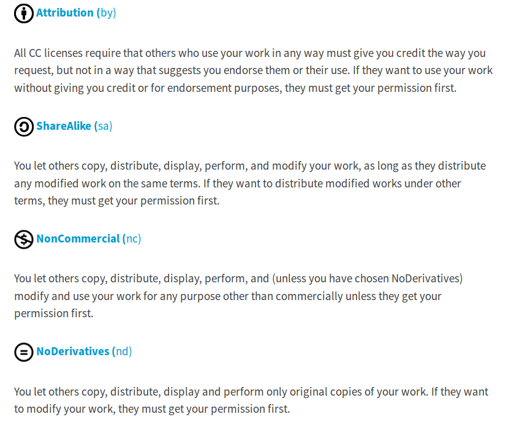
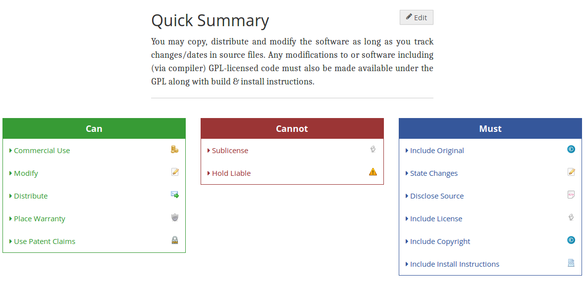
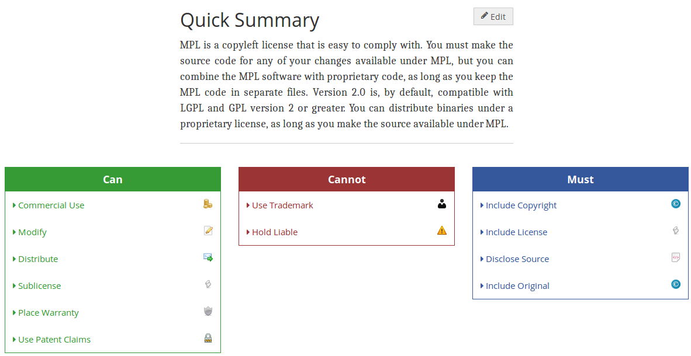
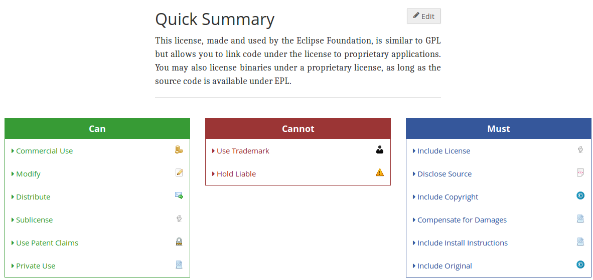
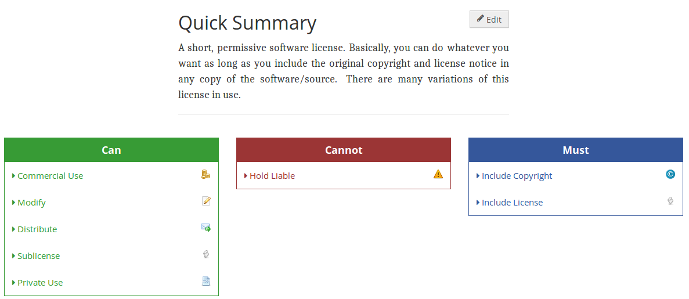
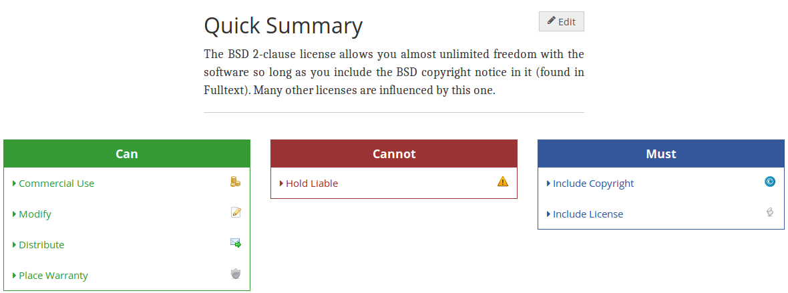
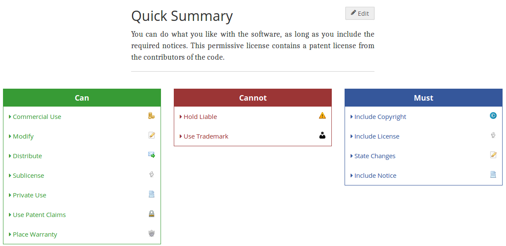
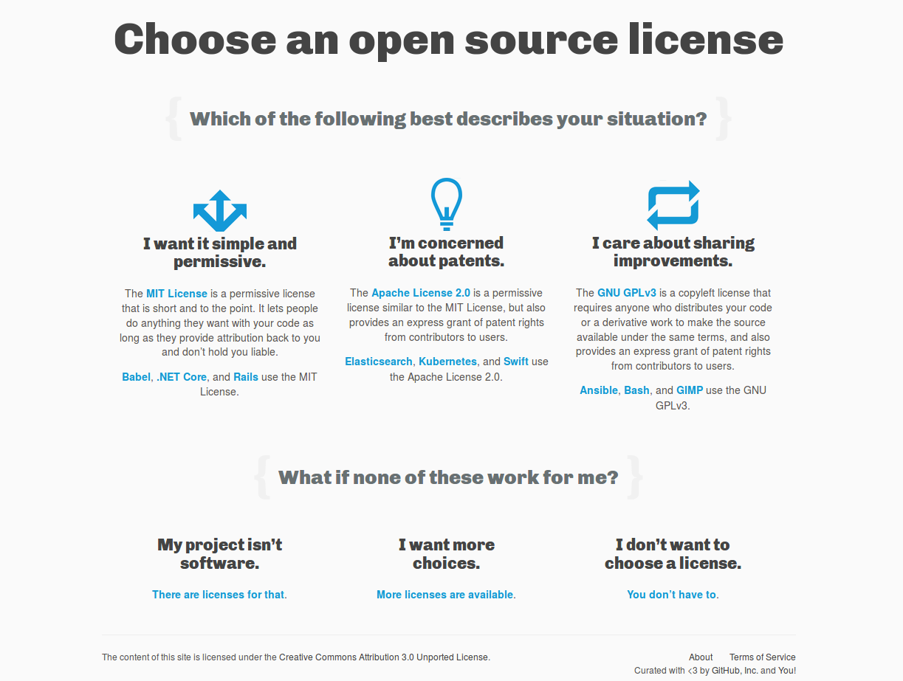
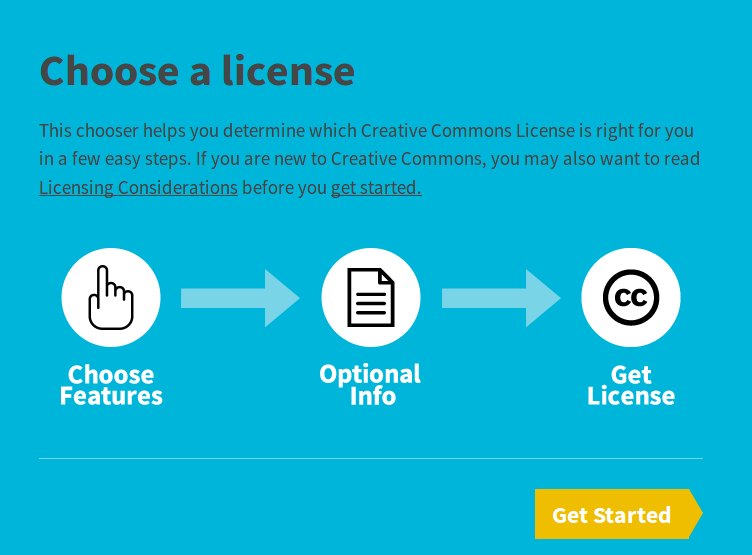

class: center, middle # CSCI-UA 480.10: OSSD <br> ## open surce licenses .author[ Instructor: Joanna Klukowska <br> ] .license[ Unless noted otherwise all content is released under [CC BY 4.0](https://creativecommons.org/licenses/by/4.0/). ] --- # Attribution Much of the content of these slides has been adapted from and influenced by several sources: - [OSI Frequently Answered Questions](https://opensource.org/faq) - Wikipedia articles: - [Software license](https://en.wikipedia.org/wiki/Software_license#Software_licenses_and_copyright_law) - [Copyleft license](https://en.wikipedia.org/wiki/Copyleft) - [Permissive software license](https://en.wikipedia.org/wiki/Permissive_software_licence) - [The Legal Side of Open Source](https://opensource.guide/legal/) - Open Source Licensing by Carlos Jensen - [The Importance and Value of Open Source Licenses](https://github.com/rcos/CSCI2963-01-Spring2017/blob/master/Lectures/Lec2-Licensing-S2016-RPIpres-By-Patrick-Masson.pdf) by Patrick Masson --- # common questions - Do I really need to have a license for my software (or non-software materials) if I am making it available for anyone to download anyway? -- - Can I _use_ any software that I find available for download on the Internet? -- - What are the differences between all the different licenses? -- - Can I just place my work in public domain? -- .footnote[ more questions (and answers) on [The Legal Side of Open Source](https://opensource.guide/legal/) ] --- # Software License A __software license__ is a legal instrument (usually by way of contract law, with or without printed material) governing the use or redistribution of software. - Under United States copyright law __all software is copyright protected__, in source code and also as object code form. The only exception is software in the __public domain__. - A typical __software license grants the licensee, typically an end-user, permission to use one or more copies of software__ in ways where such a use would otherwise potentially constitute copyright infringement of the software owner's exclusive rights under copyright law. .footnote[ from [Software license](https://en.wikipedia.org/wiki/Software_license#Software_licenses_and_copyright_law), Wikipedia, retrieved on Apr. 19, 2018. ] --- class: center, middle # no license # = # "all rights reserved" --- # Public Domain vs. Copyright <center> <a href=https://commons.wikimedia.org/wiki/File:Difference_between_open_license,_public_domain_and_all_rights_reserved_copyright.png> <img src="https://upload.wikimedia.org/wikipedia/commons/a/af/Difference_between_open_license%2C_public_domain_and_all_rights_reserved_copyright.png" alt="Difference between open license, public domain and all rights reserved copyright" width="550px" align="middle"> </a> </center> - Software (or anything else) has to be copyrighted in order to be licensable. .footnote[ Image by Boyoung Chae, Creative Commons Attribution 4.0 International license. ] --- # _Copyleft_ software licenses -- __Copyleft__ refers to licenses that allow derivative works but require them to use the same license as the original work. - the right to freely distribute copies and modified versions of a work with the stipulation that the same rights be preserved in derivative works down the line - copyleft licenses are _restrictive_, _protective_, _reciprocal_ <a href=https://commons.wikimedia.org/wiki/File:Difference_between_open_license,_public_domain_and_all_rights_reserved_copyright.png> <img src="https://upload.wikimedia.org/wikipedia/commons/thumb/8/8b/Copyleft.svg/330px-Copyleft.svg.png" alt="Copyleft symbol" width="250px" align="right"> </a> - examples: - [GNU public license](https://opensource.org/licenses/gpl-license) - [Mozilla public license](https://opensource.org/licenses/MPL-2.0) - [Eclipse public license](https://opensource.org/licenses/EPL-1.0) - see also [Copyleft license](https://en.wikipedia.org/wiki/Copyleft) on Wikipedia --- # _Permissive_ software licenses A __permissive__ software license is a free software software license with minimal requirements about how the software can be redistributed. - sometimes also called BSD-like or BSD-style license - examples: - [MIT License](https://opensource.org/licenses/MIT) - [BSD License](https://opensource.org/licenses/BSD-3-Clause) - [Apple Public Source License](https://opensource.org/licenses/APSL-2.0) - [Apache License](https://opensource.org/licenses/Apache-2.0) - see also [Permissive software license](https://en.wikipedia.org/wiki/Permissive_software_licence) on Wikipedia --- # Contributor agreements - many open source projects will only accept contributions from people who have submitted a legal document known as a __contributor agreement__ - not an open source license - a way for the contributor to tell the project that it has the right to distribute the new contributions under the project's existing open source license - two kinds: - __Contributor License Agreement (CLA)__ - the original contributor retains copyright ownership of their contributions, but grants the project a broad set of rights such that the project can incorporate and distribute the contributions as it needs to - __Copyright Assignment Agreement (CAA)__ - the contributor actually transfers copyright ownership of the contributions to the project, who can then license it however they want since they own it (but a CAA typically grants very broad non-exclusive rights back to the contributor so that they too can use, distribute, sublicense etc their contribution freely). - "the project" has to be some kind of legal entity able to enter into agreements (a non-profit entity, sometimes represented by an umbrella non-profit organization, sometimes a for-profit corporation - see also [Contributor Agreements](http://wiki.civiccommons.org/Contributor_Agreements/) --- # Creative Commons ## Licensing things other than software - Creative Commons licenses provide an easy way to manage the copyright terms that attach automatically to all creative material under copyright. - The licenses allow that material to be shared and reused under terms that are flexible and legally sound. - Creative Commons offers a core suite of six copyright licenses. - Because there is no single "Creative Commons license," it is important to identify which of the six licenses you are applying to your material, which of the six licenses has been applied to material that you intend to use, and in both cases the specific version. <a href="https://creativecommons.org/" ><img src="img/cc_logo.png" alt="creating commons logo" width="200px" align="right"></a> --- # CC License Conditions  .footnote[from [Creative Commons website](https://creativecommons.org/share-your-work/licensing-types-examples/), retrieved Apr. 19, 2018] --- class: center, middle # Selected linceses from [Software licenses in Plain English](https://tldrlegal.com/) --- # GNU General Public License v3 (GPL-3) <br> <center>  </center> --- # Mozilla Public License 2.0 (MPL-2.0) <br> <center>  </center> --- # Eclipse Public License 1.0 (EPL-1.0) <br> <center>  </center> --- # MIT License (Expat) <br> <center>  </center> --- # BSD 2-Clause License (FreeBSD/Simplified) <br> <center>  </center> --- # Apache License 2.0 (Apache-2.0) <br> <center>  </center> --- class: center, middle # Selecting a lincese --- # Chosing a license - Do not create your own license (unless you are a big corporation with lawyers who know what they are doing and you have good reasons to have your own license) - Decide what restrictions are important to you and your user base - Consider compatibility issues, and whether a multi-license is right for you - If in doubt, simple is usually better - Use available tools to guide you through the decision process. --- # choosealicense.com <center> <a href="https://choosealicense.com/"></a> </center> --- # Creative Commons tools for chosing a license <center> <a href="https://creativecommons.org/share-your-work/"></a> </center>